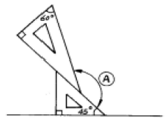
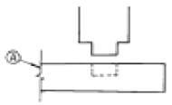
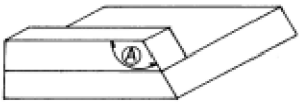
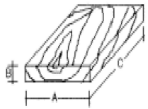
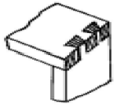

가구제작기능사 (2005-01-30 기출문제)
1과목: 임의 구분
1. 여러개의 형태 사이에 강·중·약 또는 주·객·종이라 하여 강조하는 구성법은?
- 반복구성
- 억양구성
- 비례구성
- 대칭구성
(정답률: 56%)

2. 도면이 갖추어야 할 조건 중 관계가 없는 것은?
- 간단하고 정확하게 표현한다.
- 쉽게 이해할 수 있도록 한다.
- 모든 도면의 축척은 통일시킨다.
- 일정한 규칙, 기호에 알맞게 한다.
(정답률: 72%)
3. 해칭(Hatching)선에 대한 설명으로 옳은 것은?
- 기본 중심선 또는 기선에 대하여 30°의 가는 실선을 긋는다.
- 같은 부품의 단면은 떨어져 있어도 해칭의 방향과 간격은 같게한다.
- 서로 인접하는 단면의 해칭은 각도 및 간격을 같게 해서는 안된다.
- 해칭선은 45°의 굵은 직선을 사용한다.
(정답률: 57%)
4. 아래 그림에서 A 의 각은 얼마인가?

- 120°
- 135°
- 150°
- 165°
(정답률: 63%)
5. 다음 중 가구를 이동을 중심으로 한 분류에 속하지 않는 것은?
- 가동 가구
- 모듈러 가구
- 시스템 가구
- 붙박이 가구
(정답률: 64%)
6. 가장 큰 원을 그릴 수 있는 컴퍼스는?
- 대형 컴퍼스
- 중형 컴퍼스
- 비임 컴퍼스
- 스프링 컴퍼스
(정답률: 61%)
7. 도면의 내용에 따른 분류에 있어서 가공할 부분을 나타내고 그에 대한 가공법 사용공구 및 치수 등을 상세하게 나타내며 제작 및 공작상의 과정을 나타내는 제작도는?
- 상세도
- 조립도
- 부품도
- 공정도
(정답률: 50%)
8. 창호기호에서 스테인레스강의 문을 나타내는 재료기호는?
- SD
- SW
- SsD
- SsW
(정답률: 54%)
9. 2소점 투시도에서 시점의 거리를 멀리 했을때 나타나는 현상은?
- 조감도에 가까워진다.
- 건물의 가까운 부분과 먼부분의 대조가 적어진다.
- 수평한 면이 넓게 나타난다.
- 일그러진 투시도가 된다.
(정답률: 52%)
10. 디자인에서 율동감을 나타내려고 할 때의 형식은 어떤 것들이 있는가?
- 단순, 변화, 강조
- 종속, 우세
- 대비, 대조, 조화
- 강조, 반복, 점층
(정답률: 46%)
11. 다음 중 입체도법이 아닌 것은?
- 정투상도법
- 등각투상도법
- 경사투상도법
- 전개도법
(정답률: 64%)
12. 삼각자의 크기는 어느 부분을 기준으로 하는가?
- 45°자의 빗변과 60°자의 수선길이
- 45°자의 빗변과 60°자의 빗변길이
- 45°자의 수선길이와 60°자의 빗변
- 45°자의 수선길이와 60°자의 수선길이
(정답률: 51%)
13. 그림에서 Ａ선의 설명으로 옳은 것은?

- 파단선
- 단면선
- 절단선
- 가상선
(정답률: 56%)
14. 투상도법에서 물체를 위에서 수직으로 내려다본 상태의 그림을 무엇이라 하는가?
- 정면도
- 평면도
- 배면도
- 측면도
(정답률: 66%)
15. "축 늘어져 쉰다"는 뜻으로 오늘날에는 누울 수 있게 속을 넣은 평평한 소파 및 아주 편한 의자류를 지칭하는 용어는?
- 다이밴(divan)
- 세티(settee)
- 라운지(lounge)
- 윙 체어(wing chairs)
(정답률: 64%)
16. 특종합판에 있어서 무늬목 합판이라고도 하는 것은?
- 화장합판
- 멜라민 화장합판
- 폴리에스테르 화장합판
- 염화비닐 화장합판
(정답률: 50%)
17. 대나무의 벌채시기로 적당한 것은?
- 9∼11월
- 6∼8월
- 3∼5월
- 12∼2월
(정답률: 59%)
18. 부패균이 목재 내부에 침입하여 섬유를 파괴시킴으로서 생긴 흠을 무엇이라 하는가?
- 옹이구멍
- 껍질박이
- 썩정이
- 감재
(정답률: 59%)
19. 목재의 인공건조방법이 아닌 것은?
- 증기법
- 진공법
- 열기법
- 압연법
(정답률: 58%)
20. 열경화성 수지의 특성이 아닌 것은?
- 내열성이다.
- 밀도가 크며 딱딱하다.
- 탄력성이 없고 부스러지기 쉽다.
- 가열하면 유동성이고 냉각시키면 다시 굳는다.
(정답률: 58%)
2과목: 임의 구분
21. 일반적으로 건조한 목재는 어느 것이 클수록 단단한가?
- 넓이
- 부피
- 무게
- 비중
(정답률: 60%)
22. 춘재의 설명으로 옳지 않은 것은?
- 세포가 크다.
- 세포막이 얇다.
- 세포막이 유연하다.
- 세포막이 견고하다.
(정답률: 53%)
23. 목재의 부분 중 수분증발이나 흡수속도가 가장 빠른 곳은?
- 무늬결면
- 마구리면
- 곧은결면
- 선회면
(정답률: 59%)
24. 알루미늄 특성에 관한 설명으로 옳지 않은 것은?
- 열이나 전기전도율이 높고 전성과 연성이 풍부하다.
- 공기중에서 표면에 산화막이 생겨, 내부를 보호하는 역할을 한다.
- 산, 알칼리에 강하므로 보통 콘크리트에 사용한다.
- 알루미늄은 실내장식재, 가구와 창호, 커튼레일에 많이 사용된다.
(정답률: 62%)
25. 다음 중 집성목재에 대한 설명으로 옳지 않은 것은?
- 목재의 강도를 인공적으로 자유롭게 조절할 수 있다.
- 응력에 따라 필요한 단면을 얻기가 어렵다.
- 아치와 같은 굽은 용재를 만들 수 있다.
- 길고 단면이 큰 부재를 자유롭게 만들 수 있다.
(정답률: 53%)
26. 목재의 건조속도에 대한 설명 중 틀린 것은?
- 기온이 높을수록 건조속도가 빠르다.
- 목재의 비중이 클수록 건조속도가 빠르다.
- 풍속이 빠를수록 건조속도가 빠르다.
- 두께가 두꺼울수록 건조속도가 느리다.
(정답률: 63%)
27. 다음 중 합판을 만들기 위한 단판의 제법이 아닌 것은?
- 로우터리 베니어(rotary veneer)
- 슬라이스트 베니어(sliced veneer)
- 소오드 베니어(sawed veneer)
- 오우버레이 베니어(overlay veneer)
(정답률: 53%)
28. 목재의 강도에 관한 기술중 옳지 않은 것은?
- 함수율이 일정하고 결함이 없으면 비중이 클수록 강도는 크다.
- 함수율이 작을수록 강도는 커진다.
- 흠이 있는 목재는 강도가 작다.
- 섬유 방향에 평행하게 가한 힘보다 직각으로 가한 힘이 가장 강하다.
(정답률: 51%)
29. 목재의 제재계획에 있어 침엽수의 취재율은 어느 정도인가?
- 30% 이상
- 40% 이상
- 50% 이상
- 70% 이상
(정답률: 51%)
30. 정첩의 크기 표시로 옳은 것은?
- 두께 × 나비
- 높이 × 나비
- 넓이 × 높이
- 폭 × 두께
(정답률: 51%)
31. 다음 합성수지 중 열경화성 수지가 아닌 것은?
- 염화비닐수지
- 페놀수지
- 요소수지
- 멜라민수지
(정답률: 45%)
32. 아래 그림은 판자의 마구리 편이다. 가장 많이 변형될 판자는?
(정답률: 54%)
33. 다음 접착제 중에서 목재 접착제로 부적당한 것은?
- 아교
- 본드(에멀션형)
- 해초풀
- 멜라민 수지풀
(정답률: 59%)
34. 다음 중 목재의 방화성능을 위한 불연성 도료로 가장 많이 사용되는 것은?
- 규산나트륨
- 인산암모늄
- 황산암모늄
- 탄산나트륨
(정답률: 46%)
35. 목재의 풍화작용으로 나타나는 최초의 색은?
- 검정색
- 회색
- 갈색
- 은백색
(정답률: 58%)
36. 합판이나 판재의 곡선을 오리거나 켤 때 사용되는 휴대용 전동공구는?
- 휴대용 루터
- 휴대용 전기 둥근톱
- 휴대용 체인톱
- 휴대용 전기 실톱
(정답률: 50%)
37. 둥근톱 기계로 할 수 없는 작업은?
- 홈파기
- 턱 만들기
- 경사켜기
- 곡선오리기
(정답률: 53%)
38. 내수합판 접착제로 가장 우수한 합성수지계 접착제는?
- 요소수지
- 에포킨 수지
- 페놀수지
- 실리콘수지
(정답률: 46%)
39. 톱의 크기 기준을 정확하게 설명한 것은?
- 톱 전체의 길이
- 톱자루의 굵기
- 톱몸의 폭과 두께
- 톱몸의 길이
(정답률: 48%)
40. 두께가 6cm, 나비가 9cm, 길이가 3.6m인 목재 10개는 몇 m3 인가?
- 0.1944 m3
- 1.944 m3
- 0.324 m3
- 3.24 m3
(정답률: 48%)
3과목: 임의 구분
41. 6각형 상자를 만들려고 한다. 마구리대를 제작함에 있어 A부분의 각도는?

- 112.5°
- 120°
- 135°
- 138.5°
(정답률: 47%)
42. 목재접합에 사용되지 않는 접합법은?
- 못, 나사못 등에 의한 접합
- 목재만을 사용한 이음 및 맞춤
- 접착제에 의한 접합
- 리벳(rivet) 접합
(정답률: 60%)
43. 대패질에서 거스러미를 없애는 방법으로 적당치 못한 것은?
- 대패를 약간 경사지게 하여 깎는다.
- 날을 잘 갈아서 쓴다.
- 어미날과 덧날을 잘맞게 조절한다.
- 깎는 각도를 작게한다.
(정답률: 41%)
44. 무늬목 붙이는 작업에 대한 설명 중 틀린 것은?
- 무늬목은 무늬가 대칭이 되도록 붙여야 좋다.
- 무늬목의 이를 맞추려면 두장을 겹치게 한다음 중간을 자른다.
- 무늬목 접착은 반드시 아교만 사용한다.
- 가장자리 여유부분은 붙인 다음 뒤집어 놓고 자른다.
(정답률: 59%)
45. 대패에서 덧날의 가장 큰 역할은 무엇인가?
- 어미날 보호
- 어미날 고정
- 엇결방지
- 대팻집 보호
(정답률: 48%)
46. 나무못으로 가장 부적당한 재료는?
- 대나무
- 버드나무
- 물참나무
- 미송
(정답률: 43%)
47. 나사못은 둥근 못보다 몇배정도의 지지력을 갖고 있는가?
- 1배
- 2배
- 4배
- 8배
(정답률: 51%)
48. 각끌기계의 일일 점검 사항은?
- 주축의 흔들림
- 주축의 진동 상태
- 정반 윗면의 수평도
- 정반과 기준자의 직각도
(정답률: 40%)
49. 장부의 두께는 한 장 장부에서 부재나비의 얼마가 표준인가?
- 1/2
- 1/3
- 1/4
- 1/5
(정답률: 45%)
50. 주먹장부의 물매로 옳은 것은?
- 10 : 2 ∼ 2.5㎝
- 10 : 4 ∼ 4.5㎝
- 10 : 5 ∼ 5.5㎝
- 10 : 6 ∼ 6.5㎝
(정답률: 41%)
51. 톱니에 대한 설명 중 적당치 않은 것은?
- 톱니의 종류는 켜는톱니, 자르는톱니, 막니 등이 있다.
- 켜는톱니의 날끝각은 무른나무용이 굳은나무용보다 커야 한다.
- 윗눈은 자르는 톱니에만 있다.
- 막니는 곡선을 자르는데 편리하다.
(정답률: 47%)
52. 나사못 접합시 나사못 머리와 부재면과 평탄하도록 사용되는 송곳은?
- 반달송곳
- 돌보송곳
- 세모송곳
- 접시송곳
(정답률: 57%)
53. 빗 이음에서 이음길이는 재 춤의 몇배 정도로 하는가?
- 0.5 - 1.0배
- 1.5 - 2.0배
- 2.5 - 3.0배
- 3.0 - 3.5배
(정답률: 46%)
54. 다음 중 목재 접착에 사용되지 않는 접착제는?
- 프라이머
- 아교
- 카세인
- 비닐수지 접착제
(정답률: 51%)
55. 수축율이 제일 많은 것부터 나열된 것은?

- A→ B→ C
- B →A→ C
- C →A→ B
- A→ C→ B
(정답률: 47%)
56. 울거미를 짜넣은 합판을 만드는 목적과 거리가 먼 것은?
- 온도와 공기중의 습도로 변형을 적게하기 위하여
- 넓은 판재를 필요로 할 때
- 무거운 중량을 얻기 위하여
- 다양한 모양을 만들기 위하여
(정답률: 54%)
57. 그림과 같은 맞춤을 무엇이라고 하는가?

- 주먹장 맞춤
- 반턱 맞춤
- 끼움촉 맞춤
- 통 맞춤
(정답률: 63%)
58. 대팻날의 뒷날내기가 충분하지 않을때, 어떤 현상이 일어나는가?
- 대팻날과 덧날과의 사이에 틈이 생겨 대팻밥이 끼이게 된다.
- 덧날만 잘 연마되어 있다면 큰 문제는 없고, 약간의 거스러미가 생긴다.
- 대팻날만 잘 연마되면 거스러미는 생기지 않지만 약간 힘이든다.
- 대팻날과 덧날사이가 밀착이 되지 않아 대패질 면에 자국이 생긴다.
(정답률: 47%)
59. 조임쇠의 종류중에서 가장 큰 구조물을 조일 수 있는 것은?
- 평행조임쇠
- C클램프
- 핸드스크류
- 스틸바
(정답률: 52%)
60. 루터기계 사용시 주의해야 할 사항으로 옳지 않은 것은?
- 작업 중에는 절대로 장갑을 끼어서는 안된다.
- 부재를 올려놓고 날이 회전 중에 테이블의 높이 조정이나 안내자의 이동을 할 수 있다.
- 고속 회전이기 때문에 스위치를 꺼도 관성에 의해 오래 회전하므로 함부로 손을 대지 않도록 한다.
- 부재를 한번에 무리하게 많이 깎아서는 안된다.
(정답률: 59%)